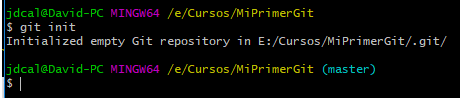

Para el desarrollo de esta actividad necesitamos contar con los siguientes elementos:
Computador con acceso a internet
Ingresamos a un navegador web en el computador. Puede ser Chrome, Edge, Mozilla. NO se recomienda el navegador web Internet Explorer ya que este se encuentra sin soporte por parte de los fabricantes.
En la barra de busquedas del navegador web ingresamos el término "git"
Configuración de GIT
Inicializar repositorio
